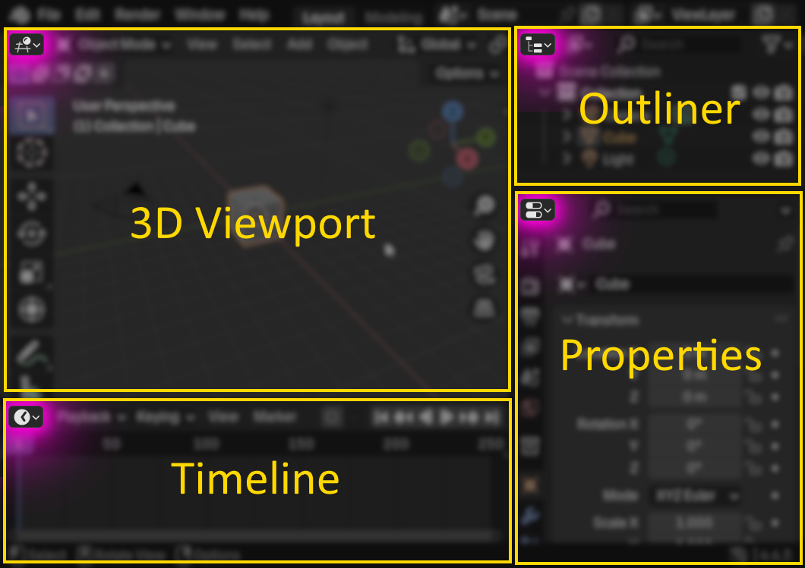

Blender Guide
Simple beginners guide
a
Top
Topbar and Workspaces

Areas & Editors
Areas are areas... where you can view Editors such as the 3D Viewport or the Timeline
Find all the Editors by pressing the icon on the top left of the Area

You can move them around, duplicate and delete.
You can even save your new layout in the Workspaces, but that comes later.
Move the camera around (Middle Mouse / Shift+Middle Mouse)

Move (G) and Scale (S)
Press it once, don't hold it.
Tip: Then press X, Y, or Z to lock the change to a certain axis.
Adding Objects (Shift+A)
Properties
Modes of the 3D Viewport
In Object Mode, you select whole objects.
And in Edit Mode you can select by vertices, edges or faces
Switch Modes (TAB) and Select All (A)
TAB is a shortcut for switching between your current mode (Object Mode by default) and Edit Mode.
Tip: Make sure to firstly pick the object(s) in Object Mode that you want to work on in Edit Mode
Edit mode
Tip: Make sure to firstly pick the object(s) in Object Mode that you want to work on in Edit Mode
The Camera
This is how the framing of your final render will look like